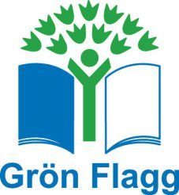

{kind=link}
För cirka 1 år sedan började Borrby förskola arbeta med Grön flagg.
Så här berättar Catrin Hjert på Borrby förskola om projektet.
”Tanken att arbeta med grön flagg väcktes av mig då jag jobbat med det på en annan förskola. Jag fick med mina kollegor på tåget och så påbörjade vi processen.
I starten ska förskolan miljöcertifieras. Vi fick redogöra för hur vi redan arbetade med miljöfrågor, hur vi sorterade, hur personal tog sig till jobbet osv.
Efter det fick vi sätta upp nya mål, hur kunde vi på Borrby förskola bli bättre?
Grön flagg arbetar utifrån olika teman. När första temats rapport är godkänd så får man sin flagga. Vi fick vår flagga i höstas.
Det temat vi arbetar utifrån nu är Närmiljö.
Barnen är navet i arbetet. Vi arbetar utifrån deras intressen och tankar. Just nu så inriktar vi oss på ekosystem och friluftsliv. Det innefattar allt från matlagning på vår gård till att vi följer processen med vad som händer löven då de bryts ner på hösten.
När vi arbetat klart med det nuvarande temat så skriver vi en rapport till Grön flagg. Efter den godkänts kan vi gå in på nästa tema och sätta upp nya mål tillsammans med barnen.”
För att läsa mer om grön flagg gå in på deras hemsida
http://www.hsr.se/det-har-gor-vi/land/i-skolan-och-forskolan-gron-flagg